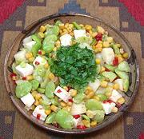

|
Fava Bean & Cheese SaladPeru - Salterito de Habas | ||||
| Serves: Effort: Sched: DoAhead: |
8 app *** 1-1/4 hrs Yes |
Fava beans (Broad Beans) are very popular in Peru. This is a good party salad, as it won't wilt on you. For the "official" version see Salterito. | |||
|
9 9 1-1/2 5 1 2 3 2/3 1/4 |
oz oz c oz T T t t |
Potatoes (1) Fava Beans (2) Corn Kernels (3) Queso Fresco (4) Chili Pepper (5) Vinegar, White Wine Olive Oil ExtV Salt Pepper |
Do Ahead - (depends)
|